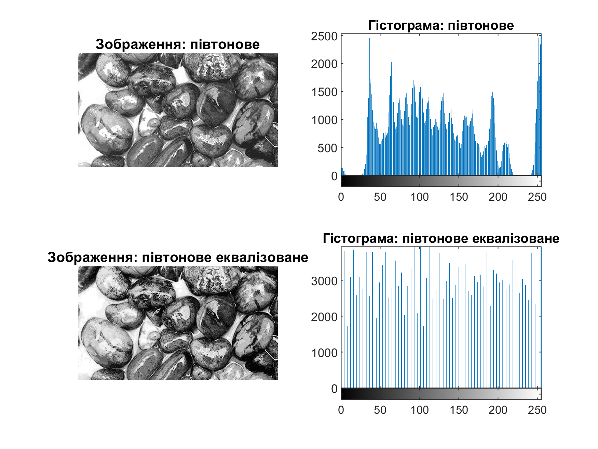
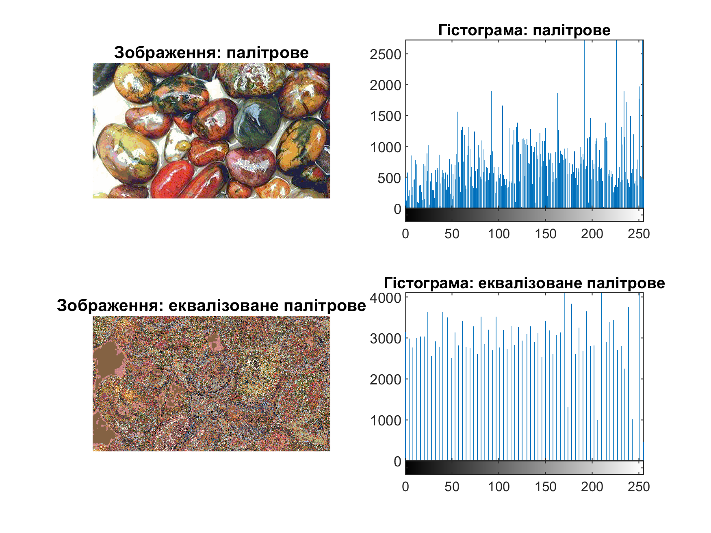
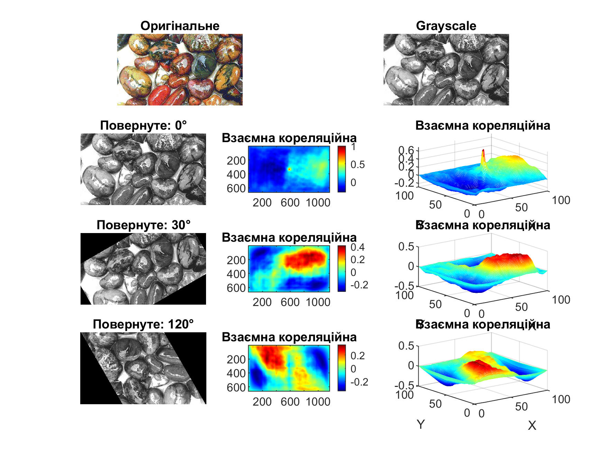
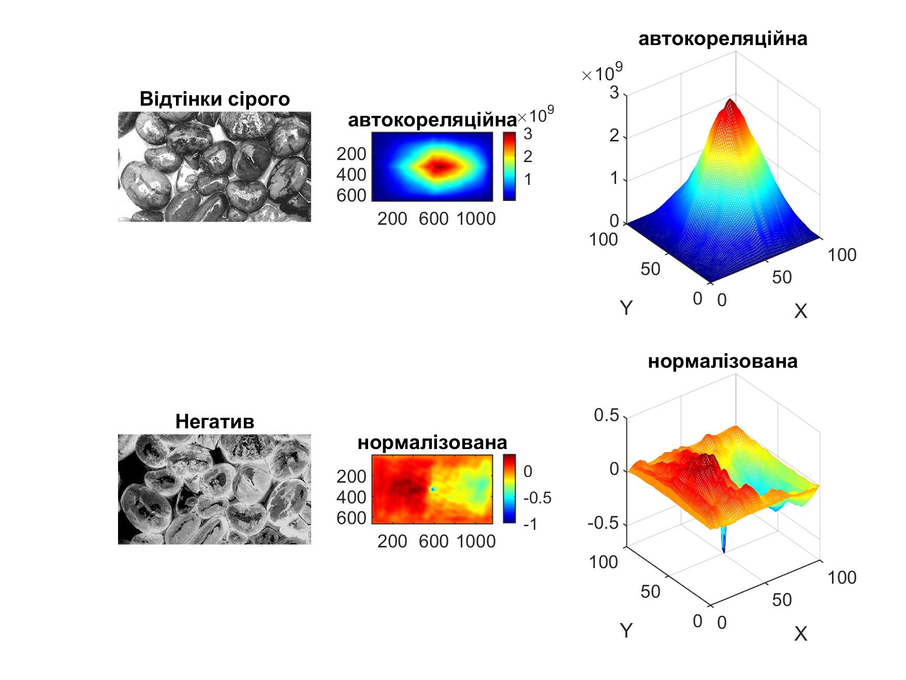

Студент: Погорєлов Богдан
Група: ПК-51мп
Вивчення функцій аналізу зображень та придбання практичних навичок їх
використання. Здобуття практичних навичок побудови гістограми розподілу яскравості
зображення в системі MatLab.
Таблиця 2.1
| Варіант | Формат вхідних зображень | Кут |
|---|---|---|
| 12 | 1. Rock.bmp 2. Rock.jpg 3 Rock.jpg | 120,30,0 |
Отримати півтонове зображення з повнокольорового, згідно варіанту таблиці 2.1, 1
колонка (1 формат вхідних зображень). Еквалізувати його. Вивести півтонове та
еквалізоване зображення та їх гістограми в одне вікно.
Отримати з повнокольорового зображення згідно варіанту табл.2.1, (2) палітрове.
Зменшити кількість кольорів палітрового зображення до 256. Еквалізувати його. Вивести
палітрове та еквалізоване зображення та їх гістограми в одне вікно.
Знайти двовимірну взаємну кореляційну функцію згідно варіанту табл.2.1 (3) між
вхідним та повернутим на кут зображенням. Графіки отриманих функцій вивести на
екран в одне вікно.
Знайти двовимірну взаємну кореляційну функцію згідно варіанту табл.2.1 (3,) між
вхідним зображенням та його негативом. Графіки отриманих функцій вивести на екран
в одне вікно.
rgb2gray.histeq.Лістинг 1
img = imread('rock.bmp');
g = rgb2gray(img);
eq = histeq(g); %вирівнювання (еквалізація)
customHist({g, eq}, {'півтонове', 'півтонове еквалізоване'}, []);
print(gcf, [mfilename('fullpath') '.png'], '-dpng', '-r300');
close(gcf);

Рис. 3 - Результ задачі 1
rgb2ind).Лістинг 2
img = imread('rock.bmp');
[pal, map] = rgb2ind(img, 256); %на палітрове з 256 кольорами
eq = histeq(pal);
customHist({pal, eq}, {'палітрове', 'еквалізоване палітрове'}, map);
print(gcf, [mfilename('fullpath') '.png'], '-dpng', '-r300');
close(gcf);

Рис. 3 - Результ задачі 2
imrotate).normxcorr2).Лістинг 3
img = imread('rock.jpg');
gray_img = rgb2gray(img);
angles = [0, 30, 120];
anglLen = length(angles)+1;
customPlot([anglLen, 2, 1], img, 'Оригінальне');
customPlot([anglLen, 2, 2], gray_img, 'Grayscale');
for k = 1:anglLen-1
angle = angles(k);
index = 3*k + 1;
rotated_img = imrotate(gray_img, angle, 'bilinear', 'crop');
c = normxcorr2(rotated_img, gray_img); % 2D нормалізована кореляція
customPlot([anglLen, 3, index], rotated_img, ['Повернуте: ' num2str(angle) '°']);
customPlot([anglLen, 3, index+1], c, 'Взаємна кореляційна');
customMesh([anglLen, 3, index+2], c, 'Взаємна кореляційна');
end
drawnow;
print(gcf, [mfilename('fullpath') '.png'], '-dpng', '-r300');
close(gcf);

Рис. 3 - Результ задачі 3
imcomplement).xcorr2),normxcorr2).Лістинг 4
img = imread('rock.jpg');
gray_img = rgb2gray(img);
neg_img = imcomplement(gray_img); % негатив
corr = xcorr2(neg_img, gray_img); % 2D автокореляційна функція
coorN= normxcorr2(neg_img, gray_img); % 2D нормалізована кореляція
customPlot([2, 3, 1], gray_img, 'Відтінки сірого');
customPlot([2, 3, 2], corr, 'автокореляційна');
customMesh([2, 3, 3], corr, 'автокореляційна');
customPlot([2, 3, 4], neg_img, 'Негатив');
customPlot([2, 3, 5], coorN, 'нормалізована');
customMesh([2, 3, 6], coorN, 'нормалізована');
drawnow;
print(gcf, [mfilename('fullpath') '.png'], '-dpng', '-r300');
close(gcf);

Рис. 4 - Результ задачі 4
Для зручності побудови графіків і гістограм були реалізовані допоміжні функції:
customHist – виведення зображень і їх гістограм;customPlot – відображення зображень і матриць у потрібному підграфіку;customMesh – побудова 3D-графіків (mesh) для великих матриць із зменшенням розміру для швидкості роботи.Лістинг 5
function customHist(images, titles, map)
for k = 1:length(images)
img_k = images{k};
t = titles{k};
i = (k-1)*2;
subplot(2,2,i+1);
if isempty(map)
imshow(img_k);
else
imshow(img_k, map);
end
title(['Зображення: ' t]);
subplot(2,2,i+2); imhist(img_k); title(['Гістограма: ' t]);
end
drawnow;
end
Лістинг 5
function customPlot(pos, im, t)
ax = subplot(pos(1), pos(2), pos(3));
if ~isa(im,'uint8') && ~isa(im,'uint16') % якщо не клас зображення
imagesc(ax, im);
axis(ax, 'image');
colorbar(ax);
colormap(ax, jet); % кольорова карта для матриці
else
imshow(im, 'Parent', ax);
colormap(ax, gray); % сірі відтінки для зображення
end
title(ax, t);
end
Лістинг 5
function customMesh(pos, c, t)
max_size = 100; % максимальний розмір для mesh, бо ноуту погано :(
[h, w] = size(c);
row_idx = round(linspace(1, h, min(h,max_size)));
col_idx = round(linspace(1, w, min(w,max_size)));
c_small = c(row_idx, col_idx);
ax = subplot(pos(1), pos(2), pos(3));
mesh(ax, c_small);
title(ax, t);
xlabel(ax,'X'); ylabel(ax,'Y');
% zlabel(ax, labelZ);
colormap(ax, jet);
end
У ході лабораторної роботи було вивчено основні функції аналізу зображень у середовищі MatLab.
Отримано практичні навички перетворення зображень у півтонові та палітрові, виконано еквалізацію гістограм яскравості.
Досліджено взаємну кореляцію між оригінальними, повернутими та негативними зображеннями.
Практичне застосування дозволило закріпити знання щодо гістограм, еквалізації та методів кореляційного аналізу.
Що таке гістограма?
Розподіл яскравостей пікселів зображення у вигляді графіка.
Яка функція використовується для отримання гістограми?
imhist.
У чому відмінність гістограми півтонового зображення від гістограми палітрового зображення?
У півтоновому – відображає розподіл рівнів яскравості, у палітровому – залежить від кількості кольорів у палітрі.
Що таке еквалізація зображення?
Вирівнювання гістограми для підвищення контрастності.
Яка функція виконує еквалізацію?
histeq.
Назвіть способи виклику еквалізації.
Використання функції histeq для півтонових і палітрових зображень.
У чому сенс кореляційного аналізу сигналів?
У виявленні подібності та збігу між сигналами або зображеннями.
Які функції кореляційного аналізу ви знаєте?
xcorr2, normxcorr2.